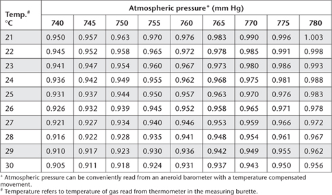

This method, originally coded as 6B3 by Rayment and Higginson (1992), is similar to Method 6B2a, except that the CO2 produced by O2-enriched, high-temperature combustion (e.g. LECO 2000 Series Induction Analyser or similar equivalents from several manufacturers including Vairomax, Elementar and Shimadzu) is measured by technology quantitative for CO2, typically infrared detection or thermal conductivity detection, supported by a microprocessor. The method only provides an accurate result for TOC in soil samples with no carbonate minerals and with no charcoal – and similar materials containing elemental C (see Merry and Spouncer 1988; ISO 10694 1995; Nelson and Sommers 1996; and Kerven et al. 2000). When these are present, the result equates to total soil C. The temperature of ignition is controlled, with near-complete combustion of OC occurring at O2-enriched furnace temperatures of around 900°C (Tiessen and Moir 1993), although some instruments have the capacity to acquire additional information by applying different temperature sequences.
Figure 6.2. Schematic flow diagram of the induction furnace.
Table 6.4. Factor chart for LECO carbon furnace.

Set up and maintain the high-temperature combustion analyser in accord with manufacturer’s instructions. Tiessen and Moir (1993) warn that in routine use at high temperatures, hairline cracks may form in the ceramic tube of the combustion furnace, causing leaks and low CO2 recoveries.
Calibrate using CaCO3 (12.0003% C), acetanilide (C6H5NHCOCH3; MW 135.16; 71.09% C), or certified soil material. Calibrations may be developed for specific types of samples.
Typically weigh between 0.5 and 0.75 g finely ground (<0.5 mm; 40°C) air-dry soil into a ceramic ‘boat’ (or vessels recommended by the instrument’s manufacturer) and spread evenly. For soils containing high C concentrations, place a layer of ignited silica sand (or a proprietary combustion controller) over the weighed sample to slow combustion. This overcomes the possibility that a high rate of combustion can over-saturate the detection cell.
Set furnace temperature to 900°C (or as recommended up to ≈1050–1300°C). Also, repack the reagent [anhydrous magnesium perchlorate; Mg(ClO4)2] tubes whenever the reagent becomes caked or moist or the warning alarm sounds, noting Mg(ClO4)2 is a strong oxidiser that also causes respiratory tract irritation and other health disorders of the eyes, skin and central nervous system. A quality control sample of known soil C concentration should be included in each batch of around 10 samples.
Report total C (%) on an oven-dry basis. Use the air-dry moisture to oven-dry moisture ratio to make the oven-dry conversion. Refer to Method 2A1 for guidance with regard to this soil moisture calculation.